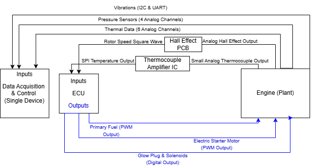
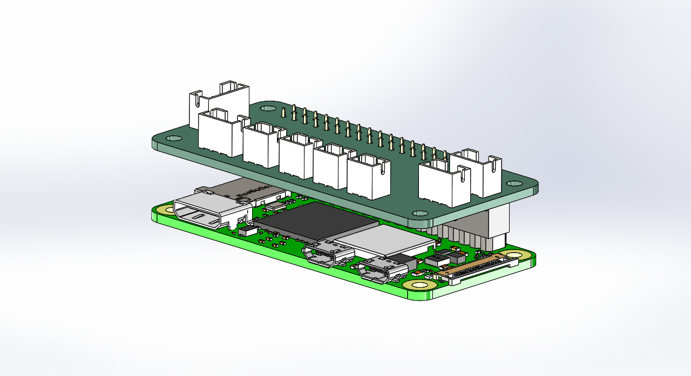
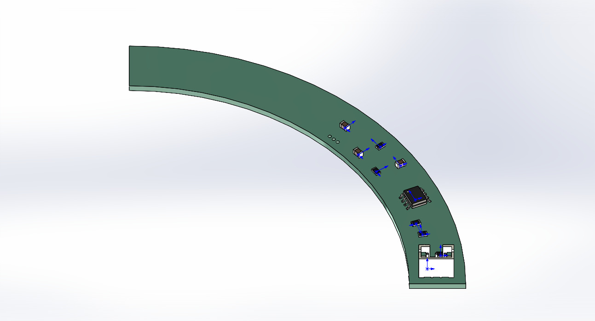

PROJECT_001↗
ECUTELEMETRY / CONTROL
EMBEDDED SYSTEMS · TEAM PROJECT
Jet Engine ECU
Developing and improving the ECU operator interface to give users greater control over the engine startup sequence, while preparing for future startup automation.
COMPUTER ENGINEERING PORTFOLIO
Hello, I'm
I design and develop systems where hardware meets software — from microcontroller-based automation to FPGA logic and real-time engineering applications.
I'm a Computer Engineering student at Western New England University, with an Associate of Science in Computer Engineering from Holyoke Community College. I enjoy understanding how systems work from the circuit level up to the software that controls them.
My interests include embedded systems, computer architecture, digital logic, and hardware-software integration. I’m looking for internship opportunities where I can contribute to real engineering challenges and continue developing my skills.
Hands-on work across embedded software, digital hardware, and system integration.
Developing and improving the ECU operator interface to give users greater control over the engine startup sequence, while preparing for future startup automation.
Designed a dual-gate, five-level parking system using an ATmega328PB, IR sensors, interrupts, UART, and an I²C LCD to track vehicle movement and availability.
Developed elevator control logic using VHDL and finite-state machine concepts for an FPGA-based digital systems project.
A closer look at my current focus: improving operator control of the startup sequence and laying the groundwork for future automation.
The ECU software connects engine monitoring and control hardware with an operator-facing application. My primary responsibility is implementing and refining the user interface to support more direct, intuitive control of the engine startup sequence.
Working alongside mechanical and electrical engineering teammates, I am also exploring how the startup workflow could be automated in a future iteration. Automation is a goal in progress, not a completed feature.
Implementing and improving the operator interface so the startup process can be controlled more effectively. This includes designing how startup controls and system feedback are presented in the C++/Qt application.
Operator input → ECU interface → control commandsThe goal is clearer interaction with the existing startup workflow.
The software uses PWM duty-cycle values for fuel-pump and starter control, alongside digital GPIO signals for glow plugs and a solenoid. I have been tracing how these software outputs relate to the physical control system.
Duty cycle = on-time / period × 100%Working toward a more automated startup sequence by studying the steps, operator decisions, and system feedback needed for a controlled workflow. This remains a future development objective.
Manual startup → guided workflow → future automationSystem-level signal flow and CAD representations of the ECU and inlet PCB.



Improve startup-sequence controls and feedback in the Qt interface; investigate requirements for eventual startup automation. Automated startup has not yet been implemented.
C · C++ · VHDL · Bash
Microcontrollers · FPGA · GPIO · UART · I²C
Linux · Git/GitHub · MATLAB · LTspice · VirtualBox
Interested in embedded systems, digital hardware, or computer engineering collaboration? I'd be glad to connect.
Add your email and LinkedIn URL here before publishing.